Build an ontology from a semantic model in Fabric IQ
There are two ways to build a Fabric IQ ontology (preview): manually, by creating each entity type and relationship from scratch, or automatically, by generating the structure from a Power BI semantic model. This lab uses the semantic model approach.
In this lab, you'll load sample data for Lakeshore Retail — a fictional ice-cream retailer — into a lakehouse and an eventhouse, build a Power BI semantic model on top of it, and then generate an ontology from that model. Each table in the semantic model becomes an entity type (Store, Products, SaleEvent), and each model relationship becomes a relationship type. You'll then verify and refine the generated ontology, enrich it with a Freezer entity bound to static and time series data, explore instances and relationship graphs, and finish by asking natural-language questions through a Fabric data agent.
[!IMPORTANT] Ontology in Microsoft Fabric is currently in preview.
This lab takes approximately 60 minutes to complete.
Note: You need access to a Fabric paid or trial capacity to complete this exercise. For information about the free Fabric trial, see Fabric trial. A Fabric administrator must also enable the following tenant settings in the admin portal: Enable Ontology item (preview), Users can use Copilot and other features powered by Azure OpenAI, Data sent to Azure OpenAI can be processed outside your capacity's geographic region, compliance boundary, or national cloud instance, and Data sent to Azure OpenAI can be stored outside your capacity's geographic region, compliance boundary, or national cloud instance (the last three are required for the data agent in Part 4).

Part 0: Set up the environment
Create a workspace
- Navigate to the Microsoft Fabric home page at
https://app.fabric.microsoft.com/home?experience=fabricin a browser, and sign in with your Fabric credentials. - In the menu bar on the left, select Workspaces.
- Create a new workspace with a name of your choice, selecting a licensing mode that includes Fabric capacity (Fabric, Fabric Trial, or Power BI Premium).
- When your new workspace opens, it should be empty. Use this workspace for all items you create in this lab.
Download the sample data
Download the five sample CSV files. The data contains static entity details about the Lakeshore Retail scenario and streaming telemetry from its freezers:
- DimStore.csv - Retail store locations
- DimProducts.csv - Ice-cream products
- FactSales.csv - Sales transactions
- Freezer.csv - Freezer equipment in each store
- FreezerTelemetry.csv - Streaming freezer temperature and humidity readings
Tip: If a file opens in the browser instead of downloading, right-click the link and choose Save link as.... You can also browse the full sample folder at Ontology samples.
Prepare the lakehouse
-
In your Fabric workspace, use the + New item button to create a new Lakehouse item called
OntologyDataLH.
-
The new lakehouse opens when it's ready. From the lakehouse ribbon, select Get data > Upload files.

-
Select four of the sample CSV files that you downloaded earlier to upload them to your lakehouse: DimProducts.csv, DimStore.csv, FactSales.csv, and Freezer.csv.
Note: Don't upload FreezerTelemetry.csv to the lakehouse. You upload this file to the eventhouse in a later step.
-
Expand the Files folder in the Explorer to view your uploaded files. Next, load each file to a delta table: for each file, select ... next to the file name, then Load to Tables > New table. Continue through the table creation dialogue, keeping the default settings.

-
The lakehouse looks like the following image when you're done. The default table names reflect the file names in all lowercase:
dimproducts,dimstore,factsales, andfreezer.
Prepare the Power BI semantic model
Now you'll build the semantic model that the ontology will be generated from.
-
From the lakehouse ribbon, select New semantic model.
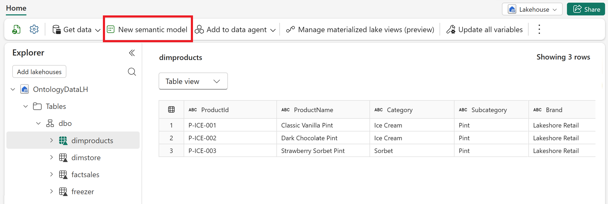
-
In the New semantic model pane, set the following details and select Confirm:
- Direct Lake semantic model name:
RetailSalesModel - Workspace: Your lab workspace (chosen by default)
- Select tables for the semantic model: select three tables — dimproducts, dimstore, and factsales
Note: Don't select the freezer table. You create the Freezer entity manually in a later part.
- Direct Lake semantic model name:
-
Open the semantic model in Editing mode when it's ready. From the ribbon, select Manage relationships.
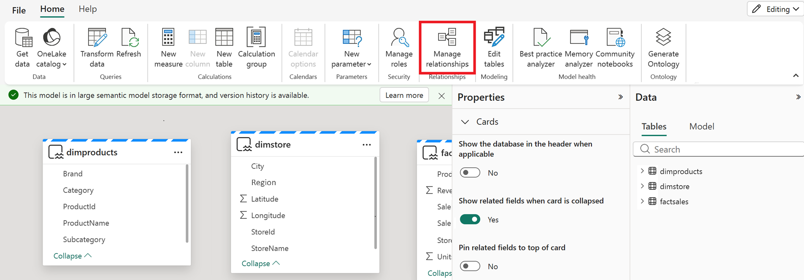
-
In the Manage relationships pane, use the + New relationship button to create two relationships with the following details:
From table To table Cardinality Cross-filter direction Make this relationship active? factsales, select StoreIdcolumndimstore, select StoreIdcolumnMany to one (*:1) Single Yes factsales, select ProductIdcolumndimproducts, select ProductIdcolumnMany to one (*:1) Single Yes -
The relationships look like this when you're done. Select Close.
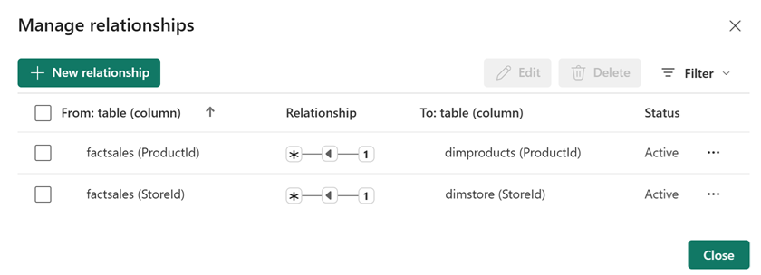
Now the semantic model is ready to import into an ontology.
Prepare the eventhouse
-
In your Fabric workspace, use the + New item button to create a new Eventhouse called
TelemetryDataEH. A default KQL database is created with the same name. -
The eventhouse opens when it's ready. Open the KQL database by selecting its name in the explorer.

-
In the menu ribbon, select Get data > Local file.

-
Create a New table called
FreezerTelemetryand browse for the FreezerTelemetry.csv file that you downloaded earlier. Continue through the table creation dialogue, keeping the default settings.
-
When you're done, the KQL database shows the FreezerTelemetry table with data.

Part 1: Generate the ontology from the semantic model
A semantic model holds information about your data and the relationships among that data. When your data is represented in a semantic model, you can generate an ontology directly from it: each visible table becomes an entity type, columns become properties, and model relationships become relationship types. In this part, you generate the ontology and then verify and complete it.
Generate the ontology
-
Go to the RetailSalesModel semantic model in Fabric. If the semantic model is still open from when you created it, select Generate Ontology from the ribbon.
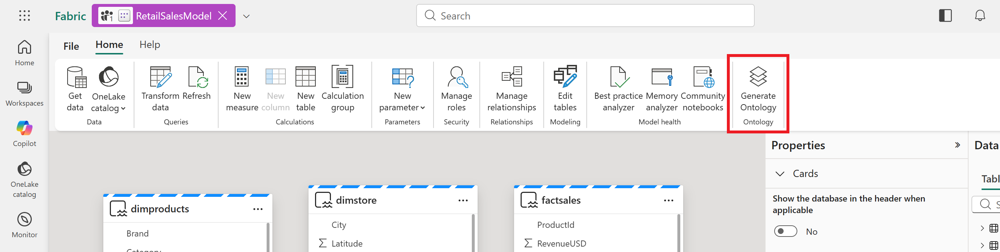
If you closed the semantic model earlier, you can select Generate Ontology from the model overview page without opening the model.
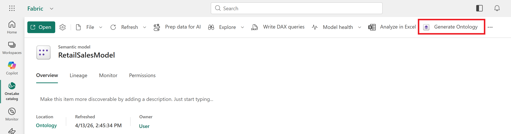
-
Select your Workspace and enter
RetailSalesOntologyfor the Name. Select Create.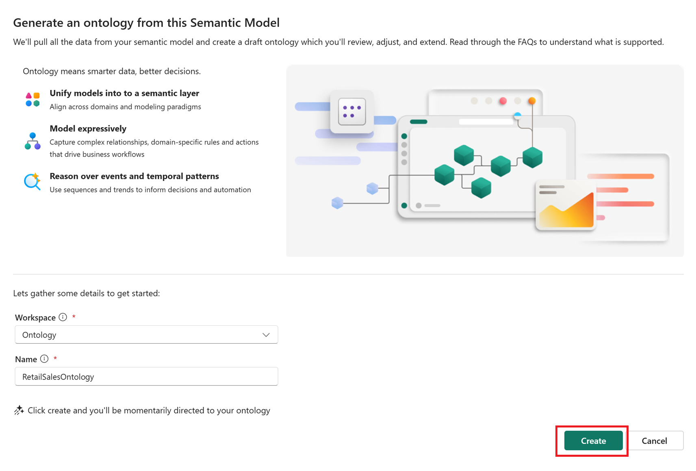
Tip: Ontology names can include numbers, letters, and underscores. Don't use spaces or dashes.
-
The ontology (preview) item opens when it's ready.
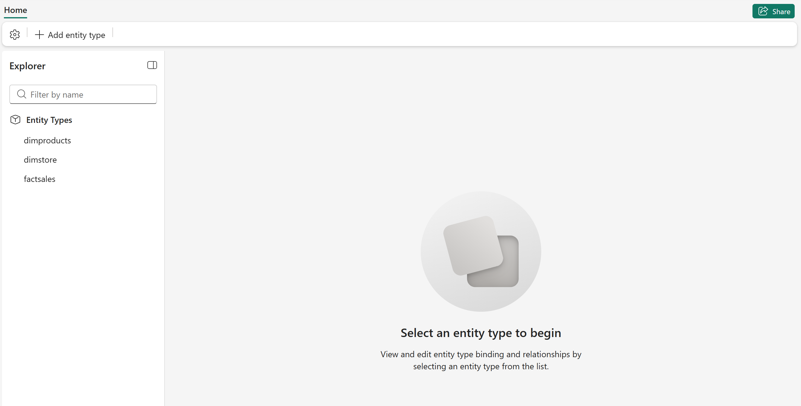
Note: If you see an error that Fabric is unable to create the ontology (preview) item, make sure that all the required tenant settings listed at the top of this lab are enabled.
Next, review the entity types, data bindings, and relationships that the semantic model generated. In the following sections, you make a few edits to complete the ontology configuration.
Rename the entity types
The Entity Types pane lists all three entity types in the ontology, named after the data tables (they might be listed in a different order): dimproducts, dimstore, and factsales.
Tip: If you don't see any entities in the ontology, make sure your semantic model is published, the tables in the semantic model are visible (not hidden), and relationships are defined.
Follow these steps to rename each entity type to a friendlier name.
-
Select the entity type. From the top ribbon, select View Entity Type details.
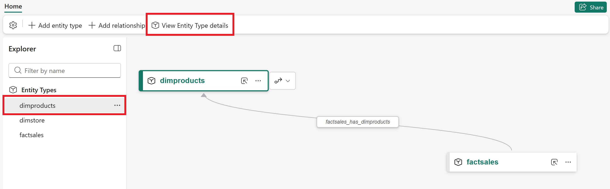
-
You see the Configure page for the entity, which surfaces its properties, data bindings, relationships, and more. In the top right corner of the page, select ... > Rename.
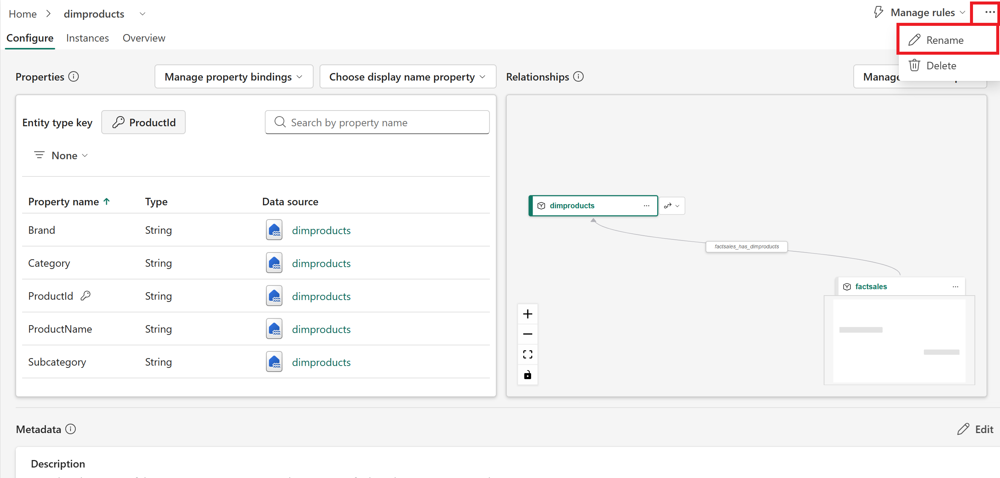
-
Enter the new name from the following table and Save:
Old name New name dimproducts Products— use the plural form Products to avoid conflict with the GQL reserved wordPRODUCTdimstore Storefactsales SaleEvent -
Select Home to return to the configuration canvas to access the other entity types.
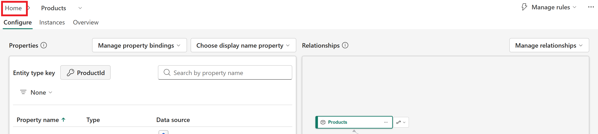
-
Repeat these steps until all entity types are renamed. When you finish, they look like this:
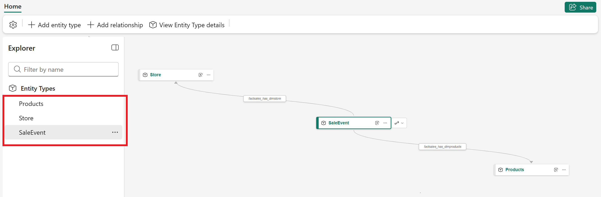
Verify properties and bindings
Follow these steps to verify that each entity type has the correct properties and source data bindings.
-
Select the entity type. From the top ribbon, select View Entity Type details.
-
On the Configure page, look at the Properties section.
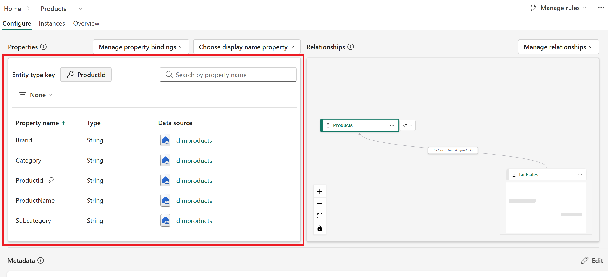
-
Verify the entity type properties match those in the following table:
Entity type Entity type key Properties Data source Products ProductIdBrand,Category,ProductId,ProductName,Subcategorydimproducts Store StoreIdCity,Latitude,Longitude,Region,StoreId,StoreNamedimstore SaleEvent (none yet) ProductId,RevenueUSD,SaleDate,SaleId,StoreId,Unitsfactsales -
Select Home and repeat these steps until all entity type properties are verified.
Add the SaleEvent key
Each entity type needs an entity type key that uniquely identifies each record of ingested data. The SaleEvent entity type doesn't have a key imported from the source data, so you add it manually.
-
Open the Configure page for the SaleEvent entity type.
-
Select Define entity type key.
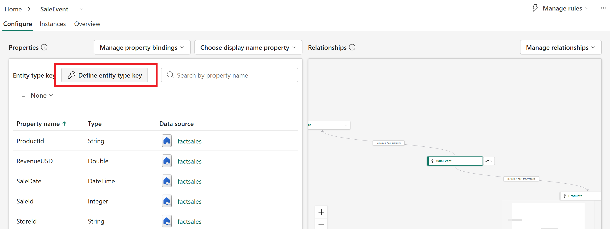
-
Select Define entity type key on the configuration details page. Select
SaleIdand Save.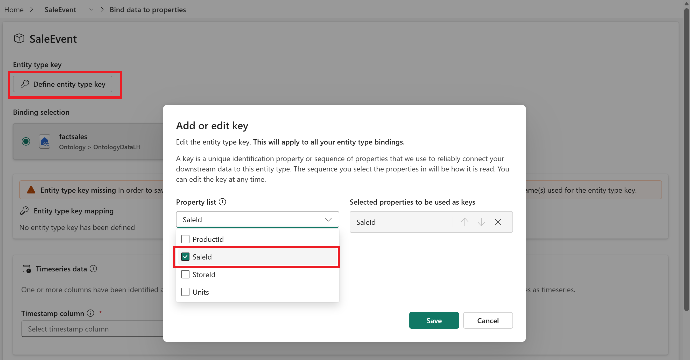
-
Save the configuration. Confirm that the entity type updated successfully, then select Cancel to close the configuration options.
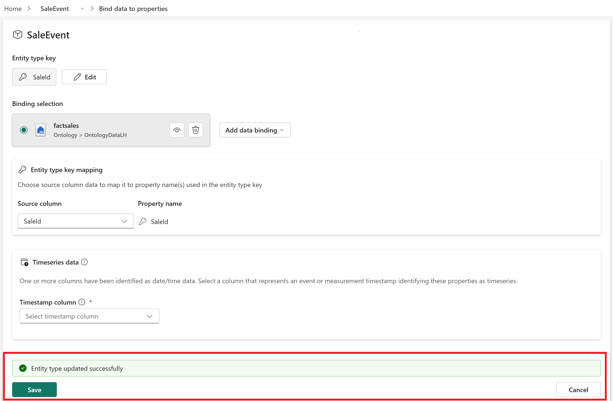
Verify and configure the relationship types
The relationship types imported from the semantic model are defined, but not fully configured and bound to data. Select the SaleEvent entity type to display it and its relationship types on the configuration canvas.
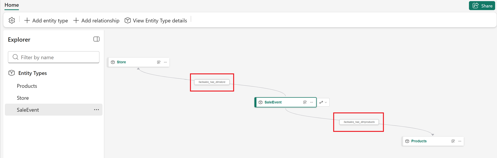
Follow these steps to configure each relationship type.
-
Select the relationship type on the configuration canvas to open the relationship details configuration. Observe the sections of the configuration page: Origin entity type, Relationship type, and Target entity type.
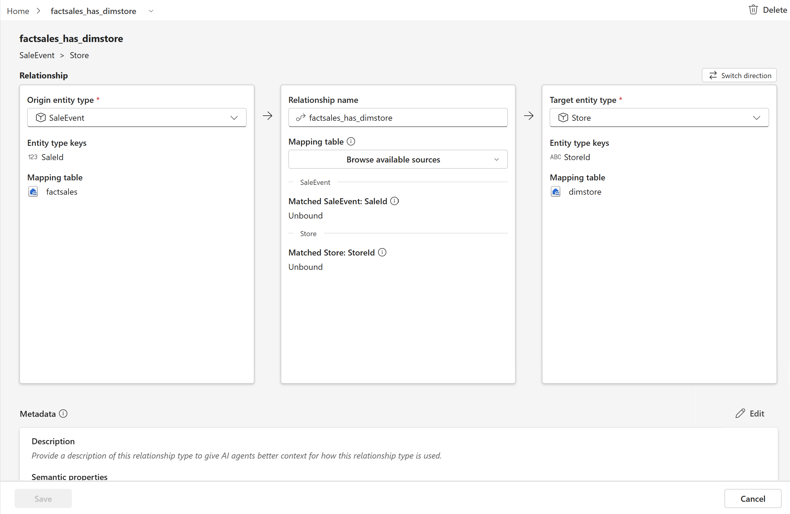
-
In the middle section, update the relationship type details to match the following table:
Original name New name Mapping table Matched SaleEvent: SaleId Matched (target entity) factsales_has_dimstore fromfactsales — this table links Store and SaleEvent because it contains identifying information for both SaleIdStoreId— matches the key property on the Store entityfactsales_has_dimproducts soldfactsales — this table links Products and SaleEvent because it contains identifying information for both SaleIdProductId— matches the key property on the Products entity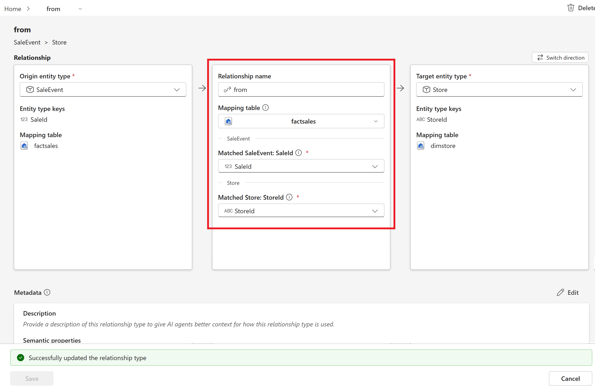
Important: Make sure to select the correct Matched columns that match the entity type key properties.
-
Save the configuration. Confirm that the relationship type updated successfully, then select Cancel to close the configuration options.
-
Select Home and repeat these steps for the other relationship type.
-
When you finish, you see the new relationship names reflected with the SaleEvent entity on the semantic canvas.
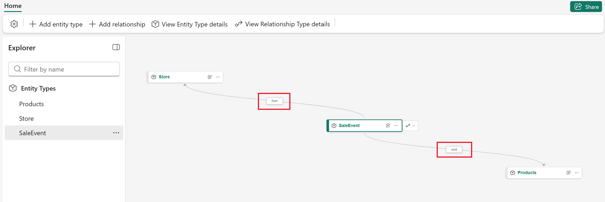
Part 2: Enrich the ontology with the Freezer entity
Now you'll enrich your ontology by adding a new Freezer entity type, which introduces properties for time series data reflecting live operational information. First you create the entity type and define properties without binding them, then bind static data, then add time series data.
Create the Freezer entity type and add properties
-
Start in the Home configuration canvas of the ontology. Select Add entity type from the top ribbon. Enter
Freezerfor the name and select Add Entity Type.
-
With the Freezer entity type selected in the Explorer, select View entity type details from the top ribbon.

-
The Configure page of the entity type details opens. Expand Manage property bindings and select Add properties.

-
Add the following properties and select Save:
Name Property type FreezerIdString ModelString minSafeTempCDouble StoreIdString 
-
The properties are added to the Configure page, unbound to any data source.

Bind static data to the properties
-
Expand Manage property bindings and select Add binding and properties.

-
Select Add data binding > Lakehouse table.

-
Choose your data source: select the OntologyDataLH lakehouse and select Next, then select the freezer table and Select.

-
Fields from the source table populate the data binding configuration. Keep the default property names.

-
Select Define entity type key at the top of the configuration. Select
FreezerIdfrom the property list and select Save.
-
Save the data binding. Confirm that the entity type updated successfully, then select Cancel to close the configuration options.
-
Back on the Configure page for Freezer, the properties are now bound to a data source.

Bind time series data
Next, add time series data to the Freezer entity by creating new properties and binding time series data to them in a single operation.
-
On the Configure page, expand Manage property bindings and select Add binding and properties again to reopen the binding configuration.
Tip: You could also bind all the data in one visit to this configuration page, as long as you complete the static binding before the time series one.
-
Under Binding selection, expand Add data binding and select Eventhouse table or materialized view.

-
Choose your data source: select the TelemetryDataEH eventhouse and select Add, then select the FreezerTelemetry table and Add.
-
A Timeseries data section appears in the configuration. For Timestamp column, select
timestamp.
-
Scroll down to the Properties section, where
StoreIdshows an error because it's already bound in the static data binding. Use the trash icon to delete the duplicated property.
-
Save the data binding. Confirm that the entity type updated successfully, then select Cancel to close the configuration options.
-
Back on the Configure page for Freezer, notice the new properties bound to the FreezerTelemetry data source. The Freezer entity now has two data bindings: static data from the freezer lakehouse table and streaming data from the FreezerTelemetry eventhouse table.

Create the "operates" relationship (Store → Freezer)
-
On the Configure page, expand Manage relationships and select Add new relationship.

-
Enter the following relationship type details and select Create: Relationship type name:
operates, Origin entity type: Store, Target entity type: Freezer.
-
The relationship is added to the Relationships section. Select the operates relationship to open the relationship details configuration.

-
In the middle section, enter the following details:
- Mapping table: Select the freezer table — it contains identifying information for both entity types.
- Matched Store: StoreId: Select
StoreId. - Matched Freezer: FreezerId: Select
FreezerId.

Important: Make sure to select the correct source columns that match the entity type key properties.
-
Save the relationship type. Confirm that it updated successfully, then select Cancel to close the configuration options. The updated relationship remains visible in the Relationships section.

Part 3: Explore the ontology
When you bound data to your entity types, the ontology automatically created instances of those entities tied to the source data rows. Now you'll explore instances, time series data, and relationship graphs.
View entity instances
-
Start in the Home configuration canvas. Select the SaleEvent entity type, and View Entity Type details from the top ribbon.

-
Open the Instances tab. Verify that it shows six entity instances with data populated from the factsales lakehouse table, like revenue and unit counts.

Tip: If data bindings don't load, confirm that the source data tables exist with matching column names, and that your Fabric identity has data access.
View time series data
-
In the top left corner of the page, use the selector next to the entity type name to switch to the Freezer entity type.

-
Open the Overview tab. The tab loads with empty charts, because the default time range of Last 30 days doesn't include any data.

-
Update the time range to a custom date range that begins on Fri Aug 01 2025 at 12:00 AM, ends on Mon Aug 04 2025 at 12:00 AM, with a Time granularity of 5 minutes.

-
Observe the time series data now visible from several Freezer entity instances in the selected time window.

View the ontology graph
-
Use the entity type selector to switch to the SaleEvent entity type. In the Relationship graph tile, select Expand.

-
The expanded graph view opens. Observe the relationships from SaleEvent to Products and Store.

-
Use the entity type selector to switch to the Store entity type. Expand its relationship graph.

-
In the graph, observe the relationships that Store has with Freezer and SaleEvent. Then select Run query in the query builder ribbon to see a graph of entity instances alongside their connections.

Tip: If the graph result looks sparse, check the entity type keys in the data bindings and verify that they match the keys you defined in Part 1. For example, the key for the SaleEvent entity type is
SaleId.
Part 4: Ask questions with a data agent
When agents use an ontology as context, they gain a governed understanding of the business: key entities, relationships, definitions, and source mappings. This helps agents produce responses that are grounded, explainable, and consistent. In this part, you create a Fabric data agent connected to your ontology.
Create the data agent
-
Go to your Fabric workspace. Use the + New item button to create a new Data agent item named
RetailOntologyAgent.
Tip: If you don't see the data agent item type, make sure it's enabled in your tenant as described in the prerequisites at the top of this lab.
-
The agent opens when it's ready. Select Add a data source. Search for the RetailSalesOntology item and select Add.

-
When the agent is ready, the ontology and its entity types are visible in the Explorer.

Provide agent instructions
Note: This step addresses a known issue affecting aggregation in queries.
-
Select Agent instructions from the menu ribbon.
-
At the bottom of the input box, add
Support group by in GQL. This instruction enables better aggregation across ontology data. The instruction is applied automatically.
Query the agent with natural language
Explore your ontology with natural language questions. Start by entering these example prompts:
- For each store, show any freezers operated by that store that ever had a humidity lower than 46 percent.
- What is the top product by revenue across all stores?
Notice that the responses reference entity types (Store, Products, Freezer) and their relationships, not just raw tables.

Tip: If you see errors that say there's no data while running the example queries, wait a few minutes to give the agent more time to initialize. Then run the queries again.
Continue exploring the data agent by trying out some prompts of your own.
You've generated a complete ontology from a Power BI semantic model — then refined its entity types, keys, and relationships, added static and time series bindings — explored it through instances and graph queries, and consumed it with an AI agent in natural language. Your ontology now gives Lakeshore Retail a shared business vocabulary that connects sales data with live freezer telemetry.
Clean up resources
You must remove the resources you created before finishing this exercise. Cleaning up releases the Fabric capacity you used and keeps your environment tidy for the next lab:
- In the bar on the left, select the icon for your workspace to view all of the items it contains.
- Select Workspace settings.
- In the General section, select Remove this workspace.